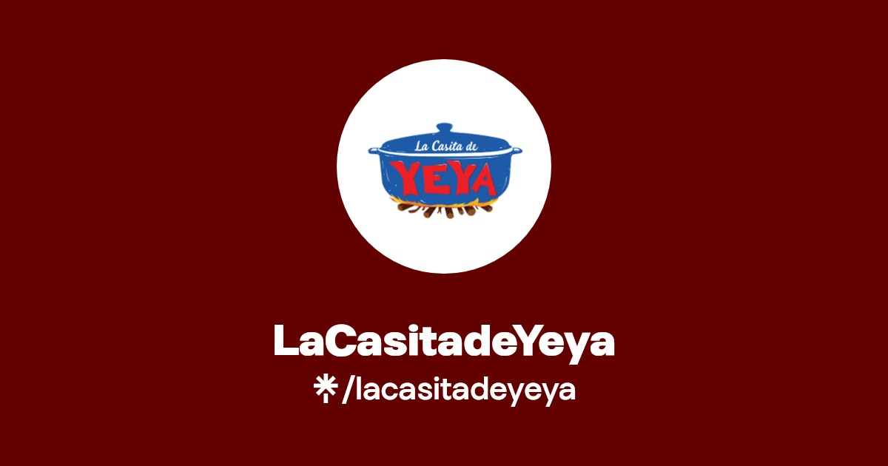

Nuestra historia
Desde sus inicios, La Casita de Yeya ha apostado por preservar la esencia de la cocina dominicana.
Nosotros
La Casita de Yeya representa una cocina criolla hecha con sabor casero y atención auténtica. Esta página se enfocará en contar la historia completa del restaurante y su crecimiento en Punta Cana.

Desde sus inicios, La Casita de Yeya ha apostado por preservar la esencia de la cocina dominicana.
Mantener una experiencia consistente en todos los locales, combinando tradición con innovación digital.
Calidad, cercanía, servicio cálido y compromiso con la sazón criolla auténtica.
Esta sección está lista para integrar testimonios, equipo y una línea de tiempo de crecimiento.